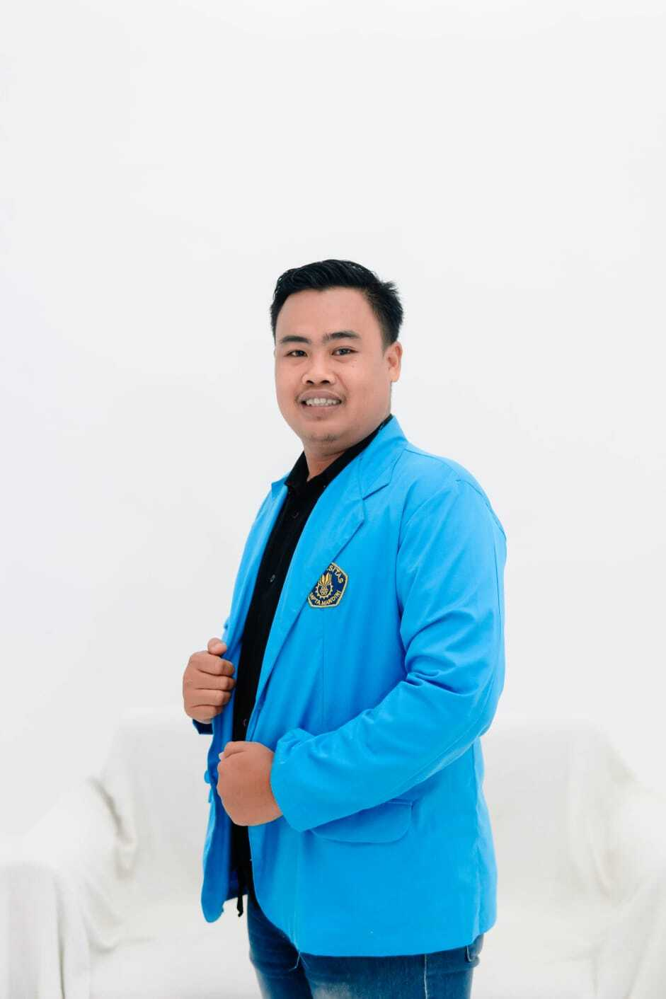
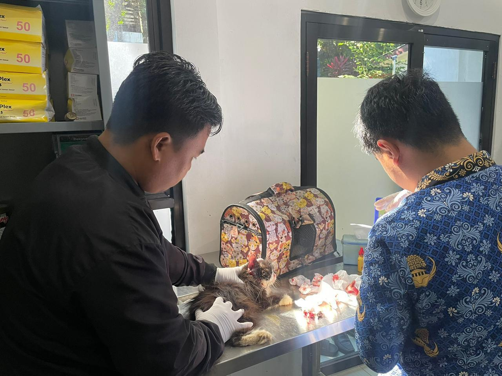
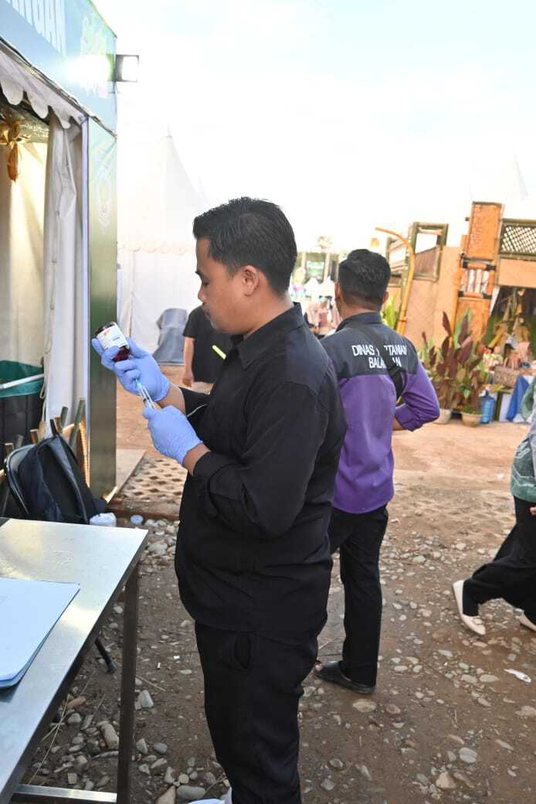

Mahasiswa Teknologi Informasi
NIM : 240131040
Semester 4
Saya adalah mahasiswa Teknologi Informasi yang memiliki ketertarikan pada dunia teknologi, pelayanan kesehatan, dan komunikasi multibahasa. Saya senang mempelajari hal baru serta terus meningkatkan kemampuan dalam bidang digital dan pelayanan masyarakat.
Saya memiliki semangat belajar yang tinggi, disiplin, dan mampu bekerja sama dalam tim maupun secara individu. Saya juga terus berusaha mengembangkan kemampuan agar dapat menjadi pribadi yang profesional dan bermanfaat bagi lingkungan sekitar.
Saya merupakan mahasiswa Teknologi Informasi yang memiliki minat dalam bidang kesehatan hewan, pelayanan paramedis, dan kemampuan komunikasi multibahasa. Saya senang mempelajari teknologi serta mengembangkan kemampuan yang dapat membantu masyarakat dalam pelayanan informasi maupun kesehatan.
Dalam bidang kesehatan hewan, saya memiliki ketertarikan untuk memahami cara perawatan, penanganan dasar, serta menjaga kesehatan hewan agar tetap sehat dan terawat. Saya juga tertarik mempelajari sistem informasi yang dapat membantu pengelolaan data kesehatan hewan secara digital.
Selain itu, saya memiliki kemampuan sebagai penerjemah tiga bahasa yang membantu dalam komunikasi dan penyampaian informasi kepada berbagai kalangan. Kemampuan ini membantu saya untuk lebih mudah memahami dan menjelaskan informasi secara jelas dan efektif.
Saya juga memiliki ketertarikan dalam bidang paramedic atau pelayanan kesehatan dasar. Saya senang mempelajari penanganan pertama, bantuan kesehatan dasar, serta pentingnya respon cepat dalam membantu masyarakat pada situasi tertentu. Dengan pengalaman dan minat tersebut, saya terus berusaha meningkatkan kemampuan agar dapat berkembang secara profesional dan bermanfaat bagi lingkungan sekitar.
| Jenjang | Instansi | Tahun |
|---|---|---|
| SD | SD Negeri Mantimin 1 | 2006 - 2011 |
| SMP | SMP Negeri 1 Batumandi | 2011 - 2014 |
| SMK | SMK Negeri 1 Batumandi | 2014 - 2017 |
| Kuliah | Universitas Sapta Mandiri | 2024 - Sekarang |

Sistem informasi sederhana untuk membantu pengelolaan data kesehatan hewan dan edukasi perawatan hewan.
Media komunikasi dan penerjemahan tiga bahasa untuk membantu penyampaian informasi secara lebih mudah dan efektif.

Edukasi pelayanan kesehatan dasar dan penanganan pertama dalam situasi darurat secara cepat dan tepat.
📍 Mantimin, Kecamatan Batu Mandi, Kabupaten Balangan, Kalimantan Selatan